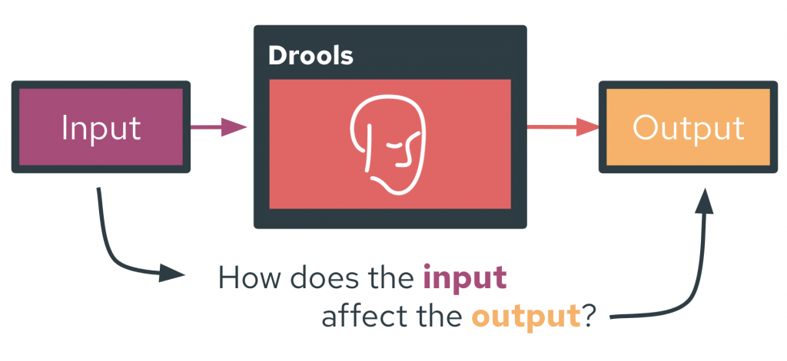
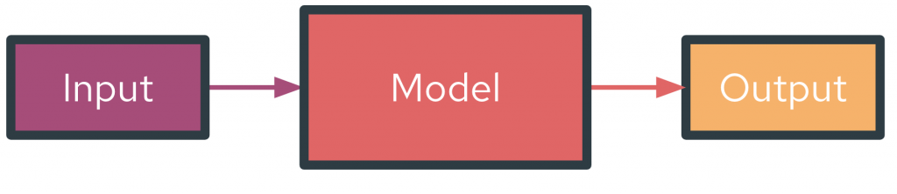
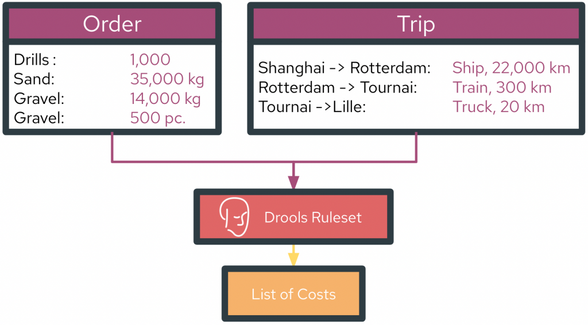

Explaining Drools with TrustyAI

Introduction to TrustyAI and Drools
Explainability is a crucial aspect in modern AI and decision services work; recent laws entitle any person subject to automated decisions to explanations of the intuition behind said decisions. Moreover, people are more likely to trust the decisions of explained models compared to unexplained models (Kim et al., 2022). Furthermore, explainability is very useful in introspecting models during the engineering process, to validate that the model is working according to design specifications and making ethical, legal, and fair decisions. However, providing intuitive explanations of a model’s workings can be difficult for large, complex models, especially so for "blackbox" models like deep neural networks or random forests. To address this issue, TrustyAI provides a suite of explainability algorithms such as LIME, SHAP, and Counterfactuals to explain any blackbox model.
Meanwhile, business rules engines like Drools provide a powerful toolset to define rules, individual pieces of decision logic that outline some larger process. Drools in this regard has immense power and flexibility to produce complex and nuanced decision processes. While each individual rule should be fairly interpretable, in that the majority tend to follow if-then-else style logic, the composition of
many rules en masse can make the entire ruleset quite hard to parse, especially for those that
didn’t have a role in building the ruleset. In these circumstances, providing an explanation of a ruleset’s behavior is an intensive task, involving reading all the individual rules and attempting to manually understand how they interlink. Rulesets can be dynamic which makes this even harder, in that the particular rationale for one decision may involve ruleflows that are completely irrelevant or entirely unused for other decisions.
A natural conclusion therefore is to try and explain Drools with TrustyAI, since TrustyAI’s algorithms can explain complex blackbox models and should therefore be well suited to explaining complex rulesets.
Mapping a Ruleset into a Model

The term "model" in an explainability algorithm context refers to some function f that, when given some input x, produces some output y, i.e, something in the form y = f(x). What f, x, and y actually consist of is dependent on the particular usecase. For example, in a credit card application process, the input x could be a potential applicant’s credit details, the model f be some mechanism that evaluates the applicant, and the output y a binary accept/reject. An explainability algorithm would try to identify and explain how the specific facets or "features" within the input x affected the output y.
However, the concepts of input, model, and output can be poorly defined within a rules engine like Drools. This is because Drools rulesets in implementation are simply a collection of Java classes, where the rules define how these classes interact and evolve throughout the execution of a ruleset. Rulesets can therefore take the form of basically any arbitrary Java program, in which case, how should input and output be defined in such a way that is most applicable to the majority of existing rulesets? Furthermore, can these defined inputs and outputs be automatically identified and extracted from existing rulesets without requiring any redesign of the ruleset, such that rulesets can be explained "out-of-the-box"?
To satisfy these criteria, I’ve created the following definitions of input and output within Drools:
Inputs
To initialize a rule evaluation, a series of objects are inserted into Drools. These inserted objects are logical choice for the inputs, specifically, any settable attribute within these objects or their recursive nested objects is defined as the model input. These attributes need to be settable due to the way that most explainability algorithms operate in a modify-and-observe fashion; they modify characteristics of the input and observe their effects on the output to understand the model’s internal workings. Therefore, the explanability algorithms need to be able to modify the inputs, meaning anything used as an input needs to be settable.
Outputs
While the object insertion allows for a fairly simple definition of input, outputs are more amorphous as Drools does not specifically return anything from a ruleset evaluation. Instead, the evaluation of a ruleset modifies or deletes the inserted objects, or even creates new ones. These are the consequences of a ruleset evaluation, and are the most plausible candidates as the outputs of the system. Specifically, any of the following are considered a possible output:
- Any gettable attribute of any object or recursive nested object that was created, modified, or deleted during ruleset evaluation
- Any object that was created or deleted during ruleset evaluation
The motivation to restrict attributes to be gettable is fairly obvious; in order to actually extract a created, modified, or deleted attribute it has to be retrievable in the first place.
Implementing These Definitions
Input Tracker
Automatically identifying potential inputs is fairly straightforward; the user needs to pass a Supplier of all the objects that need to be inserted into Drools before ruleset evaluation. This initial input marks the initial values of all extracted features, and it is these values that will be explained by the TrustyAI algorithms. After the Object Supplier is created, all attributes of these objects are parsed recursively (such as to identify the settable attributes of all nested objects) for settable attributes. All found settable attributes are identified as candidate input features. This list can be narrowed down by a set of user-configurable filters that include or exclude specific rules, field names, or objects from consideration. Then a mapping between a TrustyAI PredictionInput and the attribute setters is generated, such that the set of objects-to-be-inserted can be generated, the relevant attributes set to desired values as per the PredictionInput (i.e., the particular values desired by the explainability algorithm as it tweaks the original input), and then passed into Drools.
Output Tracker
Again, identifying potential outputs proves slightly harder. Since the goal is to track the creation, modification, or deletion of objects or gettable attributes during ruleset evaluation, a RuleFireListener is placed into the Drools engine. This tracks whenever any rule activates within the ruleset evaluation, and allows for the insertion of hooks before and after the activation. This functionality is exploited to monitor for potential outputs: before a rule fires, all objects and attribute values in the Drools engine are tracked. If any of these items have not been previously seen during evaluation, they are marked as novel items and thus potential outputs. After the rule fires, all objects and attribute values within the engine are again recorded. Any differences (in either item presence/absence or attribute value) between the before and after sets are marked as further potential outputs. After the full ruleset evaluation is complete, this process will have created a set of all objects and attributes that meet our output criteria. Again, this set can be narrowed down by a set of user-configurable filters that include or exclude specific rules, field names, or objects from consideration.
Practically, this requires a single evaluation of the ruleset ahead of the actual explanation work, to track the various consequences of the specific initial input passed into Drools. This does limit the available output candidates to just those that were identified during this initial input. Novel outputs (i.e., consequences unseen during the evaluation of the initial input) are not valid output candidates. However, the system is robust to the absence of desired outputs, (that is, an output that was recorded during the evaluation of the initial input, but does not necessarily appear for other inputs) and as such a workaround to the novel output issue is to find an input that produces the desired output, and use its absence as the tracked output signal.
Usage
With the input trackers and output trackers, we now have a schema by which to automatically input novel feature values into the rule engine and then extract our desired outputs. This lets a Drools ruleset evaluation be viewed as our model, which in turn lets Drools be explained via the TrustyAI explainers. In general, the workflow involved in producing the explanations looks as follows:
- Define a
Supplier<List<Object>>, a function that produces an initial set of objects to be inserted into Drools, thus defining the initial feature values. - Define a
DroolsWrapperby specifying a Drools rule set and the Object Supplier. - Identify the available features within the supplied objects.
- Narrow these features down by specifying filters, if desired.
- If a counterfactual explanation is desired:
- Specify feature boundaries to constrain the possible values of these features.
- If a SHAP explanation is desired:
- Specify background feature values.
- Identify the available outputs.
- Narrow these outputs down by specifying filters, if desired.
- Choose a set of specific outputs to be marked as model outputs during explanation.
- Wrap the
DroolsWrapperinto a TrustyAIPredictionProvider. - Use the
PredictionProviderwithin any TrustyAI explanation algorithm, just like any otherPredictionProvidermodel.
Explaining Drools with TrustyAI: Examples

We’ll use the Cost Calculation example from Nicolas Héron’s gitbook, Drools Onboarding. In this ruleset, an Order is created consisting of a variety of products as well as a Trip which details the shipping route and modalities that the order must undergo. The evaluation of the ruleset then computes the various associated costs with the order shipment, like the tax, handling, and transportation costs.
Setup
First, let’s define the Object Supplier:
Supplier<List<Object>> objectSupplier = () -> {
// define Trip
City cityOfShangai = new City(City.ShangaiCityName);
City cityOfRotterdam = new City(City.RotterdamCityName);
City cityOfTournai = new City(City.TournaiCityName);
City cityOfLille = new City(City.LilleCityName);
Step step1 = new Step(cityOfShangai, cityOfRotterdam, 22000, Step.Ship_TransportType);
Step step2 = new Step(cityOfRotterdam, cityOfTournai, 300, Step.train_TransportType);
Step step3 = new Step(cityOfTournai, cityOfLille, 20, Step.truck_TransportType);
Trip trip = new Trip("trip1");
trip.getSteps().add(step1);
trip.getSteps().add(step2);
trip.getSteps().add(step3);
// define Order
Order order = new Order("toExplain");
Product drillProduct = new Product("Drill", 0.2, 0.4, 0.3, 2, Product.transportType_pallet);
Product screwDriverProduct = new Product("Screwdriver", 0.03, 0.02, 0.2, 0.2, Product.transportType_pallet);
Product sandProduct = new Product("Sand", 0.0, 0.0, 0.0, 0.0, Product.transportType_bulkt);
Product gravelProduct = new Product("Gravel", 0.0, 0.0, 0.0, 0.0, Product.transportType_bulkt);
Product furnitureProduct = new Product("Furniture", 0.0, 0.0, 0.0, 0.0, Product.transportType_individual);
order.getOrderLines().add(new OrderLine(1000, drillProduct));
order.getOrderLines().add(new OrderLine(35000.0, sandProduct));
order.getOrderLines().add(new OrderLine(14000.0, gravelProduct));
order.getOrderLines().add(new OrderLine(500, furnitureProduct));
// combine Trip and Order into CostCalculationRequest
CostCalculationRequest request = new CostCalculationRequest();
request.setTrip(trip);
request.setOrder(order);
return List.of(request)
}
While that was a little clunky, it is an implicit necessity of this specific ruleset; the only difference required by the TrustyAI-Drools integration is popping all of that inside the Supplier () -> {etc} lambda. Next, we can initialize the DroolsWrapper and investigate possible features.
// initialize the wrapper DroolsWrapper droolsWrapper = new DroolsWrapper(kieContainer,"CostRulesKS", objectSupplier, "P1");
Feature Selection
With a DroolsWrapper created, we can investigate possible features:
// setup Feature extraction droolsWrapper.displayFeatureCandidates();
This produces a massive list of possible features, a sample of which are shown below:
=== FEATURE CANDIDATES ======================================================
Feature | Value | Type | Domain
-----------------------------------------------------------------------------
trip.steps[0].transportType | 1 | number | Empty
trip.steps[2].stepStart.name | Tournai | categorical | Empty
order.orderLines[0].product.height | 0.2 | number | Empty
order.orderLines[1].product.depth | 0.0 | number | Empty
order.orderLines[2].product.transportType | 3 | number | Empty
order.orderLines[3].numberItems | 500 | number | Empty
order.orderLines[1].product.width | 0.0 | number | Empty
order.orderLines[1].product.name | Sand | categorical | Empty
totalCost | 0.0 | number | Empty
order.orderLines[3].product.transportType | 2 | number | Empty
totalHandlingCost | 0.0 | number | Empty
...
...
...
=============================================================================
The interesting choices among these for possible features are the variables, things that we would have the power to change. In the case of our shipment, it’s the shipping modality and product quantities, which we can isolate by setting up the following feature filters:
// add filters via regex
droolsWrapper.setFeatureExtractorFilters(
List.of(
"(orderLines\\[\\d+\\].weight)",
"(orderLines\\[\\d+\\].numberItems)",
"(trip.steps\\[\\d+\\].transportType)"
)
);
// display candidates
droolsWrapper.displayFeatureCandidates();
=== FEATURE CANDIDATES =====================================
Feature | Value | Type | Domain
------------------------------------------------------------
order.orderLines[0].numberItems | 1000 | number | Empty
trip.steps[0].transportType | 1 | number | Empty
order.orderLines[3].numberItems | 500 | number | Empty
order.orderLines[1].weight | 35000.0 | number | Empty
order.orderLines[2].weight | 14000.0 | number | Empty
trip.steps[1].transportType | 2 | number | Empty
trip.steps[2].transportType | 3 | number | Empty
============================================================
These seem like good choices for the input, but one thing we notice here is that the trip.steps[*].transportType was automatically categorized as a numeric feature by the DroolsWrapper, likely due to however the transportType attribute is handled in the ruleset. This should really be a categorical feature, as there are only three possible values (1=Ship, 2=Train, 3=Truck). We’ll override the automatic type inference, as well as specifiy some feature domains (valid value ranges) for each of our features:
// set feature type overrides, anything matching this regex will be categorical
HashMap<String, Type> featureTypeOverrides = new HashMap<>();
featureTypeOverrides.put("trip.steps\\[\\d+\\].transportType", Type.CATEGORICAL);
droolsWrapper.setFeatureTypeOverrides(featureTypeOverrides);
// set feature domains
for (Feature f: droolsWrapper.featureExtractor(objectSupplier.get()).keySet()) {
if (f.getName().contains("transportType")){
// transport type can be truck, train, ship
FeatureDomain<Object> fd = ObjectFeatureDomain.create(List.of(Step.truck_TransportType, Step.train_TransportType, Step.Ship_TransportType));
droolsWrapper.addFeatureDomain(f.getName(), fd);
} else {
// let numeric features range from 0 to original value
FeatureDomain nfd = NumericalFeatureDomain.create(0., ((Number) f.getValue().getUnderlyingObject()).doubleValue());
droolsWrapper.addFeatureDomain(f.getName(), nfd);
}
}
droolsWrapper.displayFeatureCandidates();
=== FEATURE CANDIDATES ================================================
Feature | Value | Type | Domain
-----------------------------------------------------------------------
trip.steps[0].transportType | 1 | categorical | [1, 2, 3]
order.orderLines[3].numberItems | 500 | number | 0.0->500.0
order.orderLines[2].weight | 14000.0 | number | 0.0->14000.0
trip.steps[2].transportType | 3 | categorical | [1, 2, 3]
order.orderLines[1].weight | 35000.0 | number | 0.0->35000.0
trip.steps[1].transportType | 2 | categorical | [1, 2, 3]
order.orderLines[0].numberItems | 1000 | number | 0.0->1000.0
=======================================================================
Our features seem correctly configured, so let’s move onto output selection.
Output Selection
We’ll immediately apply some output filters to to remove irrelevant rules, objects, and attributes and focus on the interesting output candidates:
// exclude the following objects
droolsWrapper.setExcludedOutputObjects(List.of(
"pallets", "LeftToDistribute", "cost.Product", "cost.OrderLine", "java.lang.Double", "costElements", "Pallet", "City", "Step", "org.drools.core.reteoo.InitialFactImpl", "java.util.ArrayList"));
// exclude the following field names
droolsWrapper.setExcludedOutputFields(List.of("pallets", "order", "trip", "step", "distance", "transportType", "city", "Step"));
// only look at consequences of the following rules
droolsWrapper.setIncludedOutputRules(List.of("CalculateTotal"));
droolsWrapper.generateOutputCandidates(true);
Which produces the following results:
=== OUTPUT CANDIDATES ============================================================
Index | Rule | Field Name | Final Value
----------------------------------------------------------------------------------
0 | CalculateTotal | totalHandlingCost | 5004.0
1 | CalculateTotal | rulebases.cost.CostCalculationRequest_1 | Created
2 | CalculateTotal | totalTransportCost | 2499790.0
3 | CalculateTotal | totalCost | 2505075.8
4 | CalculateTotal | numPallets | 547
5 | CalculateTotal | totalTaxCost | 281.8
==================================================================================
A Simple SHAP Explanation
From these candidate outputs, let’s investigate how each of our items affected the Total Cost and Tax Cost of the shipment using SHAP. First, we’ll set these two as our desired outputs, using their indeces shown in table above:
// select the 2nd and 5th options from the generated candidates droolsWrapper.selectOutputIndicesFromCandidates(List.of(2,5));
Next, we need to specify a background input to compare against in order to use SHAP. In our case, we’ll use a shipment containing 0 items/kilos of each item, all shipped by Truck as the comparison baseline:
List<Feature> backgroundFeatures = new ArrayList<>();
for (int j = 0; j < samplePI.getFeatures().size(); j++) {
Feature f = samplePI.getFeatures().get(j);
if (f.getName().contains("transportType")) {
backgroundFeatures.add(FeatureFactory.copyOf(f, new Value(Step.truck_TransportType)));
} else {
backgroundFeatures.add(FeatureFactory.copyOf(f, new Value(0.)));
}
}
List<PredictionInput> background = List.of(new PredictionInput(backgroundFeatures));
We can then run SHAP:
Explainers.runSHAP(droolsWrapper, background)
----------------- OUTPUT CALCULATETOTAL: TOTALTRANSPORTCOST -----------------
Feature : SHAP Value
FNull : 0.000
order.orderLines[1].weight = 35000.0 : 336125.000 +/- 1587245.191
order.orderLines[2].weight = 14000.0 : 134450.000 +/- 1587245.191
trip.steps[2].transportType = 3 : 0.000 +/- 0.000
order.orderLines[3].numberItems = 500 : 6722500.000 +/- 1587245.191
order.orderLines[0].numberItems = 1000 : 161340.000 +/- 1587245.191
trip.steps[1].transportType = 2 : -41025.000 +/- 1587245.191
trip.steps[0].transportType = 1 : -4813600.000 +/- 3549188.144
---------------------------------------------------------------------------
Prediction : 2499790.000
----------------- OUTPUT CALCULATETOTAL TOTALTAXCOST -----------------
Feature : SHAP Value
FNull : 33.000
order.orderLines[1].weight = 35000.0 : 98.000 +/- 0.000
order.orderLines[2].weight = 14000.0 : 98.000 +/- 0.000
trip.steps[2].transportType = 3 : 0.000 +/- 0.000
order.orderLines[3].numberItems = 500 : 32.000 +/- 0.000
order.orderLines[0].numberItems = 1000 : 20.800 +/- 0.000
trip.steps[1].transportType = 2 : 0.000 +/- 0.000
trip.steps[0].transportType = 1 : -0.000 +/- 0.000
---------------------------------------------------------------------
Prediction : 281.800
From these explanations, we can see a few interesting things. Namely, shipping by truck is the most expensive option as compared to shipping by train or ship; for example, the trip.steps[0].transportType= 1 : -4813600.000 shows that shipping the first leg of the journey via ship (transportType=1 in this particular example) saved $4,813,600 from the total cost as compared to shipping via truck. Additionally, we can see that the choice of shipping method has no effect on the tax cost:
Feature : SHAP Value
trip.steps[1].transportType = 2 : 0.000 +/- 0.000
trip.steps[0].transportType = 1 : -0.000 +/- 0.000
trip.steps[2].transportType = 3 : 0.000 +/- 0.000
A Simple Counterfactual Explanation
Another cool thing we can do is produce a counterfactual explanation of the model. Say for example we only had a shipping budget of $2,000,000, we can use the counterfactual explainer to find the closest shipment to our original one that meets our constraint. To do this, we need to specify our Counterfactual Goal:
List<Output> goal = List.of(
new Output(
"rulebases.cost.CostCalculationRequest.totalCost",
Type.NUMBER,
new Value(2_000_000), // this is where we set our goal to 2 million
0.0d)
);
Then we can run the counterfactual explainer:
Explainers.runCounterfactualSearch(
droolsWrapper,
goal,
.01, // want to get within 1% of goal
60L // allow 60 seconds of search time
);
which, after a minute, outputs:
=== COUNTERFACTUAL INPUTS ======================================
Feature | Original Value → Found Value
----------------------------------------------------------------
order.orderLines[1].weight | 35000.0 → 35000.0
order.orderLines[2].weight | 14000.0 → 14000.0
order.orderLines[3].numberItems | 500 → 386
trip.steps[2].transportType | 3 → 3
trip.steps[1].transportType | 2 → 2
trip.steps[0].transportType | 1 → 1
order.orderLines[0].numberItems | 1000 → 1000
================================================================
=== COUNTERFACTUAL OUTPUT ======================================
Output | Original Value → Found Value
----------------------------------------------------------------
CalculateTotal: totalCost | 2505075.8 → 1983049.8
================================================================
Meets Criteria? true
The solution the counterfactual explainer has found makes just one change to the order (reducing order.orderLines[3].numberItems from 500 to 386) which results in a new totalCost of 1.98 million, which meets the criteria we set out originally.
A More Complex Counterfactual
We can try for even more complex outcomes too, for example, what if we wanted to keep our total shipped pallet count as close to unchanged as possible, while reducing our tax cost to $200? To do this, we can set our output targets in the DroolsWrapper and create a new Counterfactual search goal. Here, we’ll set the numPallets goal to 547 (our original pallet count) and the totalTaxCost goal to 200.
droolsWrapper.selectOutputIndicesFromCandidates(List.of(4,5));
List<Output> goal = List.of(
new Output("rulebases.cost.CostCalculationRequest.numPallets", Type.NUMBER, new Value(540), 0.0d),
new Output("rulebases.cost.CostCalculationRequest.totalTaxCost", Type.NUMBER, new Value(200), 0.0d)
);
Explainers.runCounterfactualSearch(droolsWrapper,
goal,
.005, //aim for within 0.5% of goals
300L //allow for 5 minutes of search time
);
The counterfactual explainer will now try and find an input configuration that meets both criteria, and does so:
=== COUNTERFACTUAL INPUTS =============================================
Feature | Original Value → Found Value
-----------------------------------------------------------------------
order.orderLines[0].numberItems | 1000 → 1000
trip.steps[0].transportType | 1 → 1
order.orderLines[3].numberItems | 500 → 498
trip.steps[1].transportType | 2 → 2
order.orderLines[1].weight | 35000.0 → 35000.0
trip.steps[2].transportType | 3 → 3
order.orderLines[2].weight | 14000.0 → 12841.676
=======================================================================
=== COUNTERFACTUAL OUTPUT =============================================
Output | Original Value -> Found Value
-----------------------------------------------------------------------
numPallets | 547.0 -> 545.0
totalTaxCost | 281.80 -> 200.717
=======================================================================
Meets Criteria? true
The counterfactual explainer has found a solution that removes just 2 pallets from the shipment, while reducing the tax cost from $281.80 down to $200.72.
Get the Code
The full code for the demo above can be seen here. The entire TrustyAI-Drools repo is at https://github.com/RobGeada/trustyai-drools.
Conclusion
In this blogpost we’ve taken a look at how to integrate TrustyAI’s explainers into Drools, allowing for the explanation of Drools ruleset evaluations via TrustyAI’s explanability algorithms. We’ve also taken a look at an example use-case, exploring how the explainers can give us insight about the functionality of rulesets as well as provide a new set of interesting features to Drools itself.